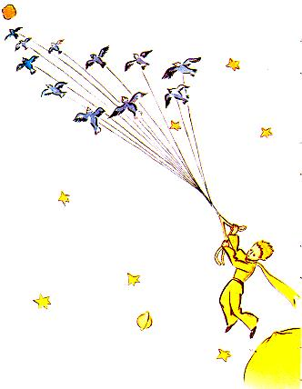

Creidim gur bhain sé tairbhe, chun éalú leis, as scaoth éanacha
eachtrainn ar a n-imirce. An mhaidin a d'imigh sé chuir sé cóir
mhaith ar a phláinéad. Réiúigh sé amach go cúramach na bolcáin
bheo. Bhí dhá bholcán aige a bhí beo. Agus bhí sin an-chaoithiúil
leis an bhricfeasta a théamh ar maidin. Bhí bolcán eile aige a bhí
marbh. Ach, mar a deireadh sé “Ní bhíonn fhios agat choíche!”
Marsin réitigh sé an bolcán marbh chomh maith. Má choinnítear
réitithe iad, dónn na bolcáin go ciúin rialta, gan brúchtadh. Tá
brúchtadh na mbolcán cosúil le sinnéithe ag dul trí thine. Ar
ndóigh, anseo ar an Talamh táimid i bhfad róbheag lenár gcuid
bolcán a réiteach. Sin é an fáth a dtugann siad an oiread sin
trioblóide dúinn.
Rinne an prionsa beag péacáin dheireanacha na mbaobab a
stoitheadh amach, agus iarracht de lionn dubhaair. Bhísé creidte
aige nach raibh sé i ndán dó teachtar ais go deo. Ach an mhaidin
sin, chonachtas dó go raibh sé an-taitneamhach, an timireachtsin
a raibh sé ina chleachtadh. Agus nuair a spréigh sé uisce ar an
bhláithín don uair dheireanach, agus nuair a thug sé faoin
chlogad gloine a chur uirthi mar fhoscadh, mhothaigh sé fonn
caointe ag teacht air.
- Slán go deo agat, ar seisean leis an bhláth.
Ach níor thug sí freagra ar bith air.
- Slán go deo agat, a dúirt sé arís.
Rinne an bláth casachtach bheag. Ach chan de bharr slaghdán
bheith uirthi.
-Óinseach cheartmé, ar sise leis ar deireadh. Gabhaim pardún
agat. Déan iarracht bheith sona.
Chuir sé iontas air nár chaith sí a dhath suas leis. D'fhan sé ina
sheasamh ansin, mara bhainfí stangadh as, agus an clogad gloine
sínte amach aige. Níor thuig sé an caoineadas ciúin sin.
-Ach is tú mo ghrá, cinnte, a dúirt an bláithín leis. Níor aithin
tú sin, agus ormsa atá an locht. Ach is cuma sin. Bhí tusa chomh
gan i gcéill liom féin. Déan iarracht bheith sona...Ná bac leis an
chlogad gloine sin. Níl se ag teastáil uaim níos mó.
- Ach an ghaoth...
- Níl mo shlaghdán chomh holc sin...Déanfaidh aer úr na
hoíche maith dom. Bláth is ea me.
- Ach na péisteanna...
- Caithfidh mé cur suas le cúpla cruimh má tá mé le haithne a
chur ar na féileacáin. Deirtear go bhfuil siad go hálainn. Murach
sin, cé a bhéarfas cuairt orm? Beidh tusa i bhfad i gcéin. Maidir leis
na beithígh mhóra, ní chuireann siad eagla ar bith orm. Nach
bhfuil mo chuid dealg agam?
Agus thaispeáin sí go saonta an dornán dealg a bhí aici. Ansin
dúirt sí:
- Ná bí ag crochadh timpeall mar sin. Is mór an crá é. Tá sé
socraithe agat imeacht. Bí ag imeacht leat.
Oir níor theastaigh uaithi go bhfeicfeadh sé í ag gol. Bláithín
thar a bheith uaibhreach a bhí inti...